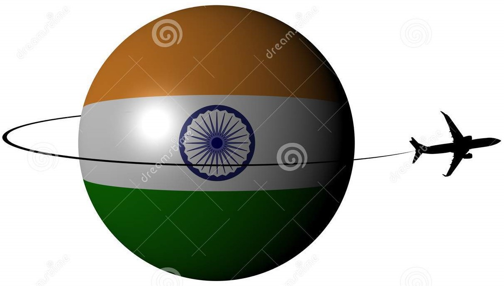
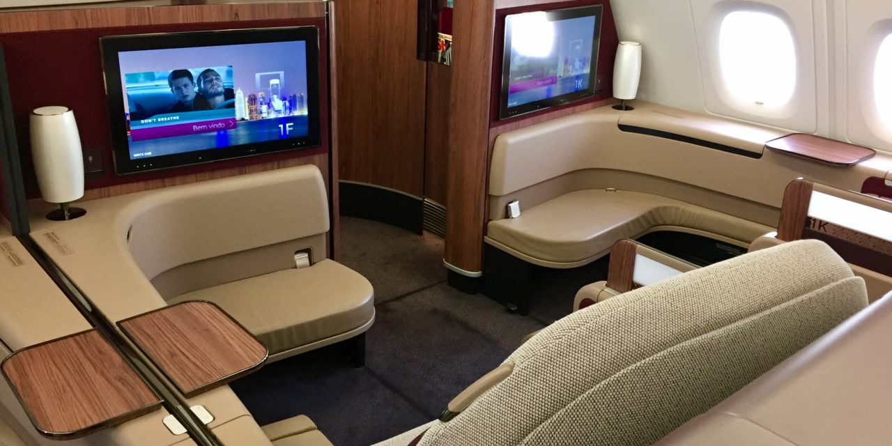
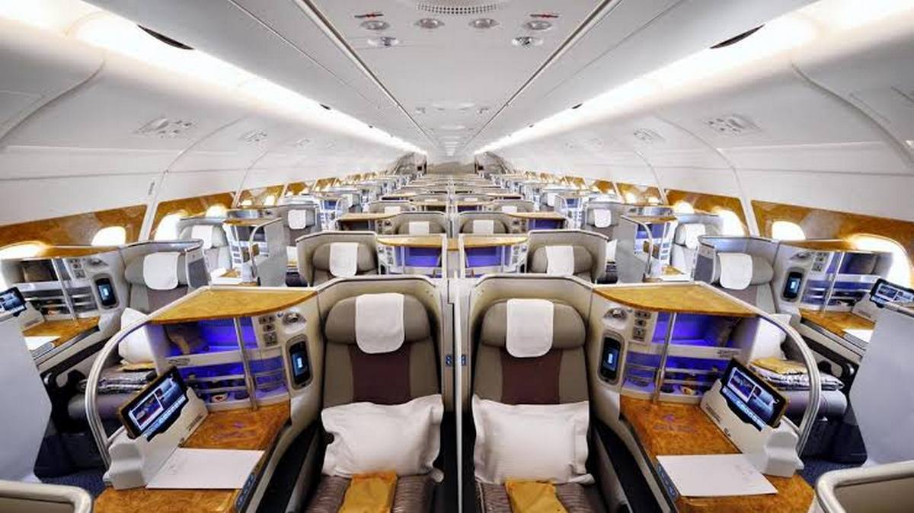
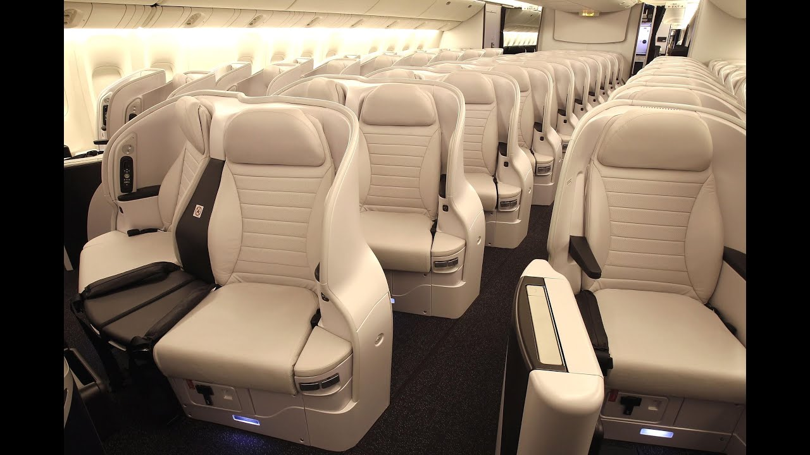
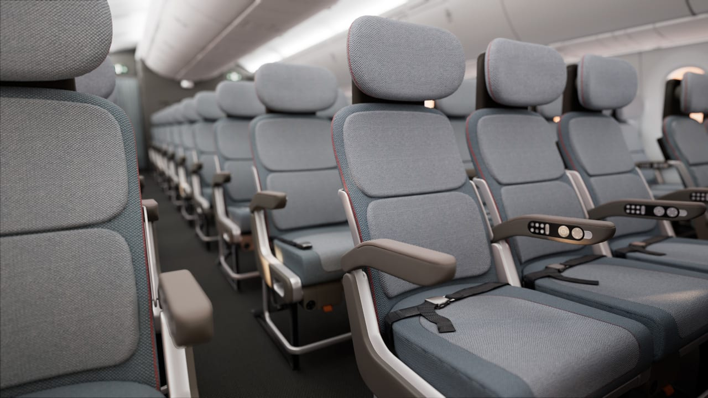

Skywalk Air Ticketing Centre

Fair Fares
| CLASSES |
COST |
| First Class |
$500-$4000 |
| Business Class |
$300-$3000 |
| Premium Economy |
$80-$250 |
| Economy Class |
$30-$180 |
*Rates may increase depending on long distance travelling
FIRST CLASS:
Most expensive, but most comfortable.
Passengers sitting in first-class section have more comfortable seating and are often given extravagant services.
First class service is typically the priciest of the classes.

BUSINESS CLASS:
Less expensive than first class,but high quality accomodations intended for business travelers.
Business class have fewer perks than First class.
Many airlines offer fully flat seats recline into a flat sleeping surface which is parallel to the surface.

PREMIUM ECONOMY:More distance between rows,but the seats are the same width as regular economy.
This travell class is positioned as a middleground between standard economy class and business class interms of price,
comfort and amenities

ECONOMY CLASS:Basic flight accomodations for leisure travelers.
Economy class typically makes up the bulk of the seating on a flight. It's the most simple class, with the fewest
amenities.

Recommended Airlines.